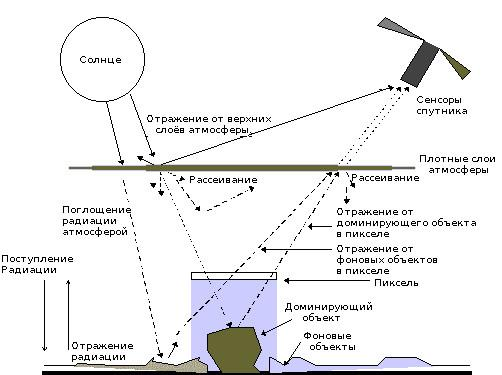
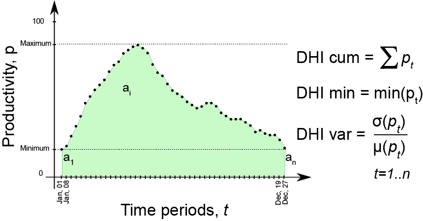
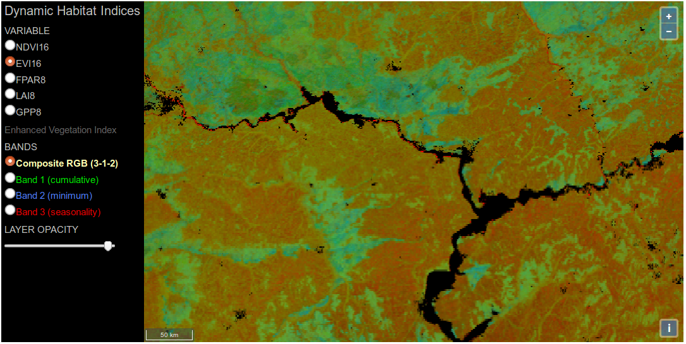
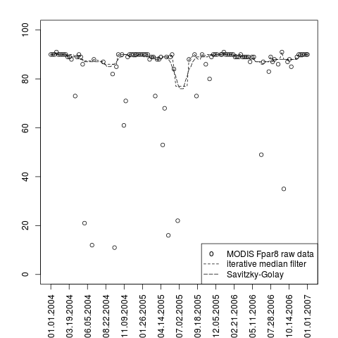
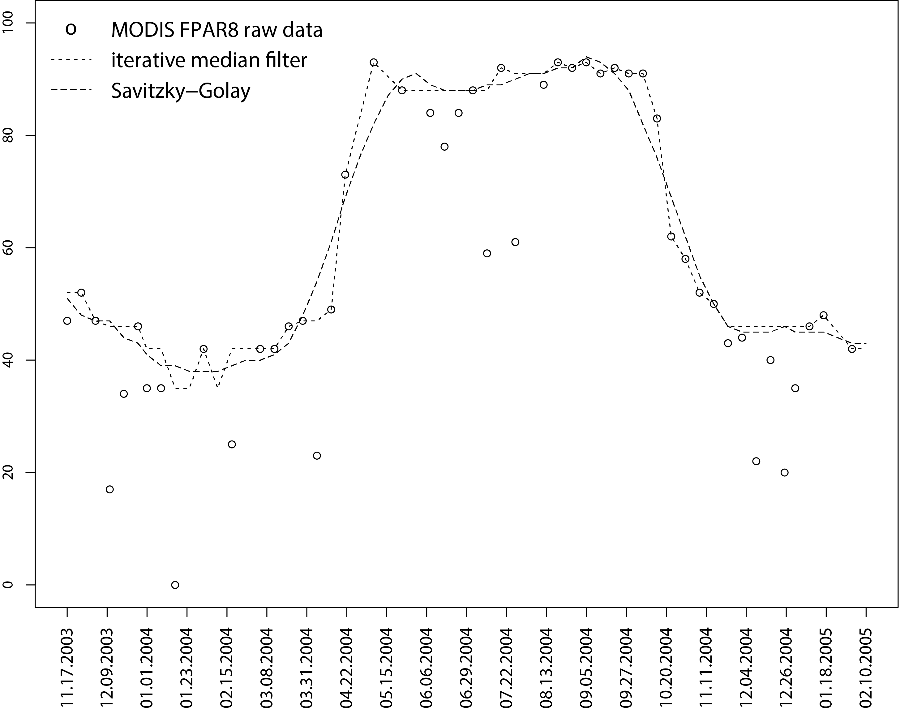
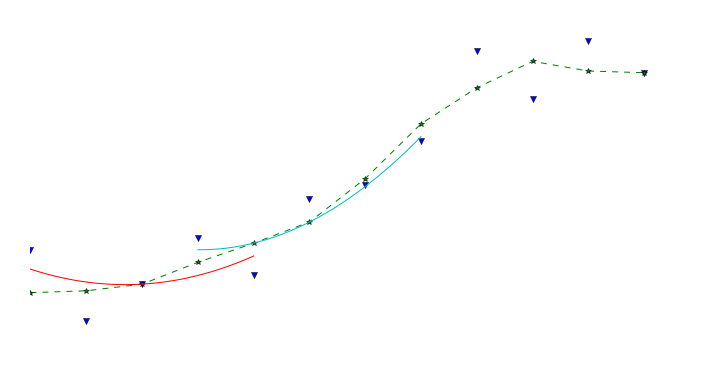
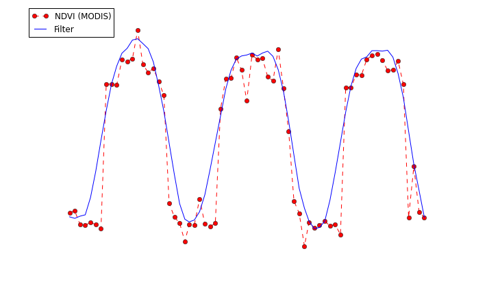
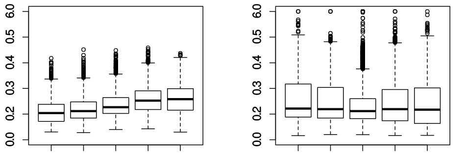

class: center, middle # Восстановление кривых изменений вегетационных индексов по данным космической съемки ## (на примере индекса NDVI) ### Колесов Д.А. --- # Содержание ### 1. Предобработка данных для дальнейшей классификации ### 2. Часто используемые методы: примеры ### 3. Сложности, требующие решения ??? Речь пойдет не о законченной работе и даже не о какой-то конкретной задаче. Скорее это набор из нескольких примеров, с которыми приходится сталкиваться на практике. Так получается, что перед тем, как произвести анализ ДЗЗ и вытащить из этих данных некую информацию, приходится производить определенные шаги: подготовку данных к анализу. Практика показывает, что * чем лучше предобработать данные, тем легче производить дальнейший анализ * определенные действия приходится производить перед каждым анализом * есть сложности, которые постоянно возникают и требуют решения --- # Классический подход к выделению типов растительного покрова по ДДЗЗ ### Предыстория * Анализ изображений ДЗЗ близок к классическому анализу изображений и многие методы АИ могут применяться при анализе ДЗЗ. ### Особенности * Анализ природных объектов и явлений => форма объектов обычно **не является** отличительным признаком. * Хорошими отличительными признаками являются спектральные характеристики объектов (обычно отражение Солнечного излучения различных длин волн). ??? Хотя анализ ДЗЗ очень близок к анализу изображений, я работаю в той области, которая имеет специфику, не отраженную в стандартных методах ДЗЗ. --- ## Классический подход к выделению типов растительного покрова по ДДЗЗ .center[  ] .center[Усредненные характеристические кривые отражательной способности для различных объектов.] .small[ * Различные объекты в разных лучах спектра выглядят по-разному, поэтому съемка одновременно в нескольких областях спектра дает существенную информацию. * Каждый пиксель, соответствующий координатам `\((x,y)\)` можно представить в виде вектора значений яркости каждого отдельного изображения: `$$ \overline{P}(x,y) = \{b_1(x,y), b_2(x,y), \dots, b_n(x,y) \} $$` где `\(\overline{P}\)` - вектор яркостей, `\(b_i(x,y)\)` - значение яркости по `\(i\)`-му каналу в точке с координатами `\((x,y)\)`. ] --- ## Типичные сложности такого подхода Даже у постоянного во времени объекта спектральные характеристики различаются от снимка к снимку: * состояние атмосферы * угол освещения * угол съемки .center[  Факторы, влияющие на попадание отраженной солнечной радиации на сенсоры спутника .footnote[http://gis-lab.info/qa/atcorr-dos.html]] --- # Типичные методы решения: ## Коррекция основных факторов * топографическая коррекция * атмосферная коррекция ## Преобразование данных * Индексы -- способ снизить вариативность данных: многие факторы влияют одновременно на несколько каналов => можно при помощи арифметических операций "вынести за скобки" влияющий фактор и сократить его. --- ## NDVI .small[NDVI (Normalized Difference Vegetation Index) нормализованный относительный индекс растительности - показатель количества фотосинтетически активной биомассы.] .left-column[ ### Примеры значений .small[ | Тип объекта | Значение NDVI | |-------------|:--------------:| | Густая растительность | 0.7 | | Разреженная растительность | 0.5 | | Открытая почва | 0.025 | | Облака | 0 | ] ] .right-column[ .small[ Пусть NIR - отражение в ближней инфракрасной области спектра, RED - отражение в красной области спектра, тогда: `$$ NDVI = \frac{NIR - RED}{NIR + RED} $$` ] .center[  .footnote[(http://gis-lab.info/qa/ndvi.html)] ] ] --- # Классический подход - анализ небольшого числа одномоментных снимков ## Плюсы и минусы одномоментных снимков ### Плюсы * Хорошо изученные методы анализа снимков. * Проще интерпретировать данные. ### Минусы * Каждый одномоментный снимок делается в уникальных условиях (геометрия системы Солнце - Земная поверхность - спутник; атмосферные условия; изменения Земной поверхности) => <<хорошие>> параметры анализа для одного снимка будут неоптимальны для другого. * Вследствие неоднородности атмосферы одинаковые объекты в разных частях снимка могут быть отражены на нем по-разному. * Объект виден в статике и разные объекты могут выглядеть одинаково. --- # Использование временных серий снимков ## Предпосылки Накоплены значительные временные серии снимков. Например: * MODIS: ежедневная съемка, начиная с 1999/2002 года * Landsat: первый спутник программы (Landsat-1) запущен 23 июля 1972, сейчас используется Landsat-8; периодичность съемки около 2х недель. ## Плюсы * Возможность анализа формы кривой сезонных изменений. * Возможность на базе статистических методов отфильтровать шумы, внесенные атмосферными и др. условиями. ## Минусы * Наличие регулярных временных рядов только для снимков с низким пространственным разрешением. * Сложность интерпретации данных. * Большая размерность данных. --- # Пример №1: выделение типов растительности (ХМАО) ## Цель Повысить качество выделения <<трудных>> типов растительного покрова за счет привлечения временных серий снимков. ## Задачи * Восстановление сезонного хода индекса NDVI (очистка от шумов). * Классификация типов растительного покрова по очищенным сериям NDVI. * Проверка точности классификации на <<трудных>> типах растительности. ## Рабочая гипотеза Разные типы растительных сообществ имеют свои фенологические особенности, которые отражаются в форме кривой сезонных изменений NDVI. .footnote[Колесов Д.А., Филиппов И.В Выделение типов растительного покрова по восстановленной кривой сезонных изменений NDVI (на основе данных MODIS). //Математическое моделирование в экологии. – Пущино, ИФХиБПП РАН, 2015, с.91-93.] --- .center[  ] Выборка значений «сырых» рядов NDVI, извлеченных непосредственно из MOD13 для: 1 - залесенных березой болот; 2 - зарастающих березой гарей. --- # Классификация на базе преобразования Фурье Дана функция `\(f(x)\)`, определенная на интервале `\(x\in (-\pi, \pi]\)`. Известно, что ее можно разложить в ряд, состоящий из тригонометрических функций (ограничения на `\(f(x)\)` очень слабые, в реальной жизни почти любая функция будет им удовлетворять): ` $$ f(x) = \frac{a_0}2 + \sum_{n=0}^\infty (a_n\cos nx + b_n \sin nx) $$ ` Легко показать, что коэффициенты ряда могут быть вычислены по формулам: ` $$ a_n = \frac1{\pi} \int_{-\pi}^\pi f(x) \cos nx dx, \qquad n \ge 0 $$ ` ` $$ b_n = \frac1{\pi} \int_{-\pi}^\pi f(x) \sin nx dx, \qquad n>0 $$ ` Исходный интервал `\(x\in (-\pi, \pi]\)` может быть легко промасштабирован на произвольный симметричный отрезок `\([-L, L]\)`. --- Пример кривых NDVI после удаления высокочастотных компонент для: 1 - залесенных березой болот; 2 - зарастающих березой гарей. .center[  ] --- ## Разделимость классов по коэффициентам разложения в ряд Фурье Пример разделимости классов по первым коэффициентам разложения в ряд Фурье для: 1 - залесенных березой болот; 2 - зарастающих березой гарей. .center[  ] --- # Пример №2: Построение индекса DHI .center[  ] DHI (dynamic habitat index): величина в сжатом виде описывающая поведение фенологической кривой (например, вегетационного индекса), состоящая из трех компонент: * DHI cum – куммулятивная компонента DHI, т.е. площадь под фенологической кривой за год; * DHI min – минимальная компонента DHI, минимальное значение фенологической кривой за год; * DHI var – сезонная компонента DHI, коэффициент вариации фенологической кривой за год. .footnote[http://silvis.forest.wisc.edu/dhi] --- ## Задача: * создание системы рассчета индекса DHI (для различных индексов) на территорию всего Земного шара по данным MODIS. .center[  ] .footnote[Экранный снимок интерфейса системы: http://silvis.forest.wisc.edu/data/DHIs] ## Сложности: * Огромный массив исходных данных: один "временной срез" свыше 8.5 млрд пикселей, более 10 лет измерений. * **Шумы в данных**. * Пропуски в данных. --- ## Примеры измерений и шумов .left-column[ .small[Пример измерений для точки, выбранной в экваториальной зоне (янв. 2004 - дек.2006)] .center[  ] ] .right-column[ .small[Пример измерений для точки, с явно выраженной сезонностью (ноябрь 2003 - февр. 2005).] .center[  ] ] ## Особенности: * Минимальное значение DHI будет явно занижено вследствие шумов. * Заниженное значение куммулятивной компоненты DHI. * Завышенное значение сезонной компоненты DHI. --- # Очистка от шумов фильтром Савицкого-Голея. .footnote[Jönsson P., Eklundh L. TIMESAT - a program for analyzing time-series of satellite sensor data //Computers & Geosciences. – 2004. – Т. 30.] .small[ Есть временной ряд `\((t_i, I_i)\)`, `\(i=1, 2, \dots, N\)`. В скользящем окне длиной `\(2m +1\)` отсчетов производится аппроксимация многочленом степени d. Для центральной точки окна по многочлену вычисляется значение, которое и будет результирующим значением сглаженной кривой в данной точке. Затем окно сдвигается на одну позицию и строится новая точка. Процедура повторяется до тех пор, пока не закончится исходный ряд. ] .center[  Пример нескольких итераций фильтра. ] --- ## Фильтр Савицкого-Голея для NDVI .footnote[Chen J. et al. A simple method for reconstructing a high-quality NDVI time-series data set based on the Savitzky–Golay filter // Remote sensing of Environment. – 2004. – Т. 91. – №. 3. – С. 332-344.] .small[Авторы предлагают алгоритм, учитывающий то, что шумы в рядах NDVI обычно вызываются атмосферными явлениями и занижают значения NDVI.] .small[.center[  Кривая NDVI для точки (3 года наблюдений): исходные данные и результат сглаживания после нескольких итераций.]] --- ## Причины модификаций * Очень большой объем данных, фильрацию нужно производить для каждого пикселя. * Пропуски в данных. Фильтр Савицкого-Голея работает медленно (в основе метода --множество прогонов МНК), особенно для данных с пропусками. .center[ ] Был введен двухэтапный подход: 1. В методике Chen J. et al. фильтр Савцикого-Голея заменен медианным фильтром. 2. После завершения фильтрации окончательное сглаживание фильтром С-Г. --- # Подгонка параметрических кривых Очень часто используется подгонка кривых методом наименьших квадратов. Есть временной ряд `\((t_i, I_i)\)`, `\(i=1, 2, \dots, N\)`. Кривая моделируется в форме: ` $$ f(t) = c_1 \varphi_1(t) + c_2 \varphi_2(t) + \dots + c_M \varphi_M(t), $$ ` где `\(\varphi_1(t)\)`, `\(\varphi_2(t)\)`, ..., `\(\varphi_M(t)\)` произвольные базисные функции, а `\(c_1\)`, `\(c_2\)`, ..., `\(c_M\)` - некоторые коэффициенты. ## Плюсы * Можно выбирать "удобные" функции. * Легко получить производные => вычисляются важные точки фенологических кривых (максимумы, минимумы, точки перегиба и т.п.). --- # Пример №3: поиск зимних рубок ### Особенности задачи: * Территория: Приморский и Хабаровский края. * Зимний период. * Данные Landsat. ### Примеры одной из рубок: * [30.12.2015](http://kolesov.nextgis.com/resource/1/display?base=osm-mapnik&lon=135.3673768043518&lat=47.675581447251545&zoom=17&styles=16,31) * [19.12.2015](http://kolesov.nextgis.com/resource/1/display?base=osm-mapnik&lon=135.3673768043518&lat=47.675581447251545&zoom=17&styles=16,37) * [11.11.2015](http://kolesov.nextgis.com/resource/1/display?base=osm-mapnik&lon=135.3673768043518&lat=47.675581447251545&zoom=17&styles=16,43) --- Пример: диаграммы отражающей способности для инфракрасного канала по пяти последовательм снимкам. Рубка была зафиксированна в центральном снимке (левая диаграмма). Рубок не было зафиксировано (правая диаграмма). .center[  ] .footnote[Больше примеров: http://nbviewer.jupyter.org/github/nextgis/remote_sensing/blob/master/deforestation/030_WinterChanges.ipynb] Особенности на больших массивах точек: * в 1-5 каналах видны отличия в яркостях пикселей для классов рубок и не-рубок, хорошо эти отличия проявляются в сдвигах медиан и первого/третьего квартилей вверх после даты вырубки и последующих дат. Если пиксель был извлечен из класса не-рубка, то сдвигов в квартилях не наблюдается. * разброс яркостей для каждого отдельного пиксела велик, классифицировать его как рубка/не-рубка, не удается. --- ## Причины неудач ### Сложности: * Мало снимков (большой период съемки Landsat) для составления достоверной временной серии. * Высокая облачность. * Горные районы. * Снегопады. * Полезный сигнал мало отличим от шумовой компоненты. --- # Выводы * Анализ временных серий снимков - полезный инструмент, позволяющий повысить точность классификации и глубже понять специфику объекта исследований. * Очень часто анализ включает в себя задачу очистки от шумов и заполнения пропусков в данных. Эти задачи могут быть успешно решены, при наличии достаточно длинных серий снимков. # Открытые вопросы * Необходимо научится фильтровать временные серии снимков более высокого пространственного разрешения и низкого временного. * Необходимо научиться работать с классами, характеристики которых незначительно отличаются от фоновых и шумовых объектов.